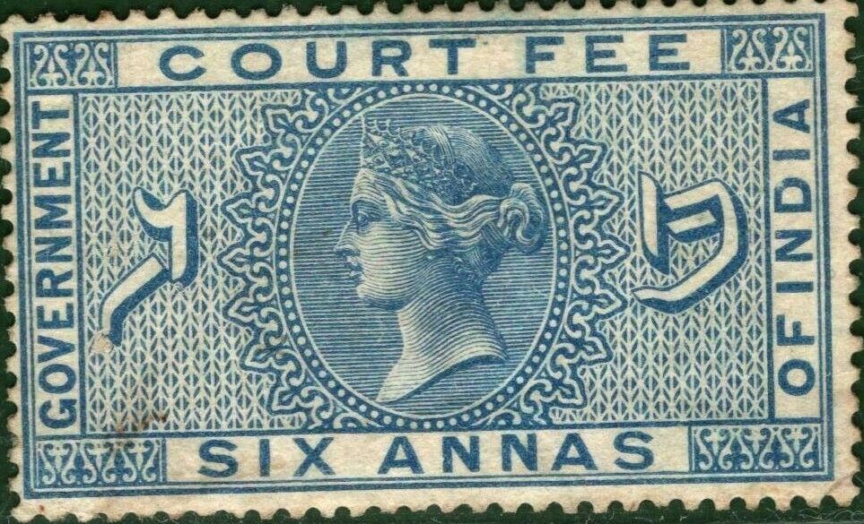
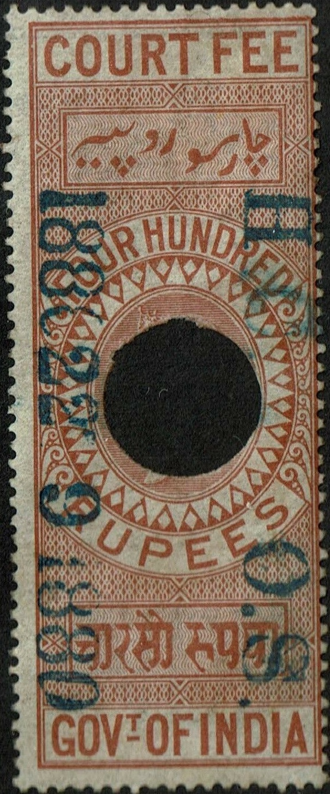

{kind=link}


Return To Catalogue - India - Court Fees, provisional issues - India fiscal stamps, overview
Note: on my website many of the
pictures can not be seen! They are of course present in the
catalogue;
contact me if you want to purchase it.
 
1872 issue, ranging from 1 a to 1000 R. Cancelled with one or
more punch holes.
I have also seen a 1 a green, 2 a orange, 2 a grey, 3 a green 4 a brown, 6 a blue, 8 a brown, 12 a orange and 12 a brown (all in same design as the 8 a above) and 2 R grey, 4 R red, 5 R lilac, 7 R red, 10 R blue, (design as the 1 R stamp above). The 1 a to 12 a have the same design (40 x 24 mm), the 1 R to 7 R have a standing design (24 x 40 mm), the 10 R to 70 R are larger again (60 x 24 mm), the 100 R to 700 R have a standing design again (24 x 60 mm). The 1000 R red is 24 x 60 mm and has a unique design (see image above with additional "SPECIMEN" overprint).
Stamps with "H.C. O.S." and date are not overprints,
but cancels (High Court On Service I presume?).
1882, large sized stamps (here reduced image size), inscription
"COURT FEE", the following values exist (all in color
lilac, all in slightly different designs): 1 a, 3 a, 4 a, 6 a, 8
a (see image above), 12 a, 1 R, 1 R 2 a, 1 R 8 a, 2 R, 3 R, 4 R,
5 R and 6 R. Similar large sized stamps were issued with the
image of King Edward VII (1904), King George V (1913), King
George VI and finally with the arms of India (1948)
1900 Court Fee stamp of India with Queen Victoria, with overprint
"BRITISH SOMALILAND." The values 1 a, 3 a, 4 a, 6 a, 8
a, 12 a, 1 R, 2 R, 3 R, 5 R were overprinted (all in lilac
color). Furthermore a sucharged stamp: "2 TWO" on 3 a
was issued in 1903 (image shown above). Similar stamps with King
Edward VII should also exist (I have not seen them).
With "MOHAMMAD GARH STATE" overprint. Also with
vertical "BERARS." overprint.
"Current only in Mahi Kantha" and Indian text: 12 a.
Special overprints for different states, I have seen: "BERARS" 8 a. "Current only in Mahi Kantha" and Indian text: 12 a (see image above). "MOHAMMAD GARH STATE": 1 R.
With "KAWARDHA STATE" overprint
Special overprints for different states, I have seen: "Current only in Kathiawar" vertically and Indian text: 1 a, 4 a "KAWARDHA STATE": 1 a, 4 a, 8 a, 1 R 2 a, 2 R, 3 R, 5 R. "NANDGAON STATE": 8 a, 2 R.
With "KANKER STATE" overprint
Special overprints for different states, I have seen: "Current only in Kathiawar" vertically and Indian text: 1 a, 4 a, 8 a, 1 R. "CURRENT ONLY IN KATHIAWAR" horizontally: 1 a. "CURRENT ONLY IN W.I.S. AGENCY" and Indian text: 8 a. "KANKER STATE": 1 a, 4 a, 8 a, 1 R 2 a, 1 R 8 a, 2 R, 3 R, 4 R, 6 R. "KAWARDHA STATE": 4 a, 6 a, 8 a, 12 a, 1 R 2 a, 2 R, 5 R, 6 R, 10 R, 15 R. "KHAIRAGARH STATE": 1 a, 4 a, 6 a, 8 a, 12 a, 1 R, 1 R 2 a, 1 R 8 a, 2 R, 3 R, 4 R, 5 R, 6 R. "MOHAMMAD GARH STATE": 1 a, 4 a, 6 a, 8 a, 12 a. "NANDGAON STATE": 4 a, 8 a, 12 a, 3 R. "RAJNANDGAON" 10 R. "SARANGARH STATE": 12 a. "SURGUJA STATE": 1 R.
With "JASHPUR STATE" overprint
Special overprints for different states, I have seen: "KANKER STATE": 1 a, 4 a, 6 a, 12 a, 1 R, 1 R 8 a, 3 R, 5 R. "KAWARDHA STATE": 2 a, 8 a, 12 a, 1 R, 1 R 2 a, 2 R. "JASHPUR STATE": 1 a, 2 a, 4 a, 8 a, 12 a, 1 R, 2 R, 3 R, 5 R. "NANDGAON STATE": 2 a. "RAIRAKHOL STATE": 4 a, 8 a, 12 a. "SARANGARH STATE": 1 R 8 a.
1875 Court Fee stamps overprinted small "Service." or larger "Service"
Small and large "Service" overprint on one document
1 a green 2 a orange 3 a green 4 a brown 6 a blue 8 a brown 12 a orange 1 R green 2 R grey 2 R orange 4 R red 5 R lilac 10 R red 20 R orange
{kind=link}
{kind=link}